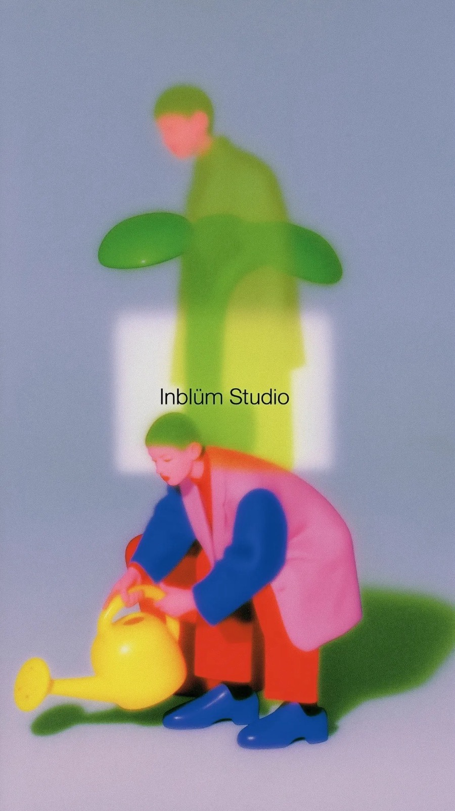
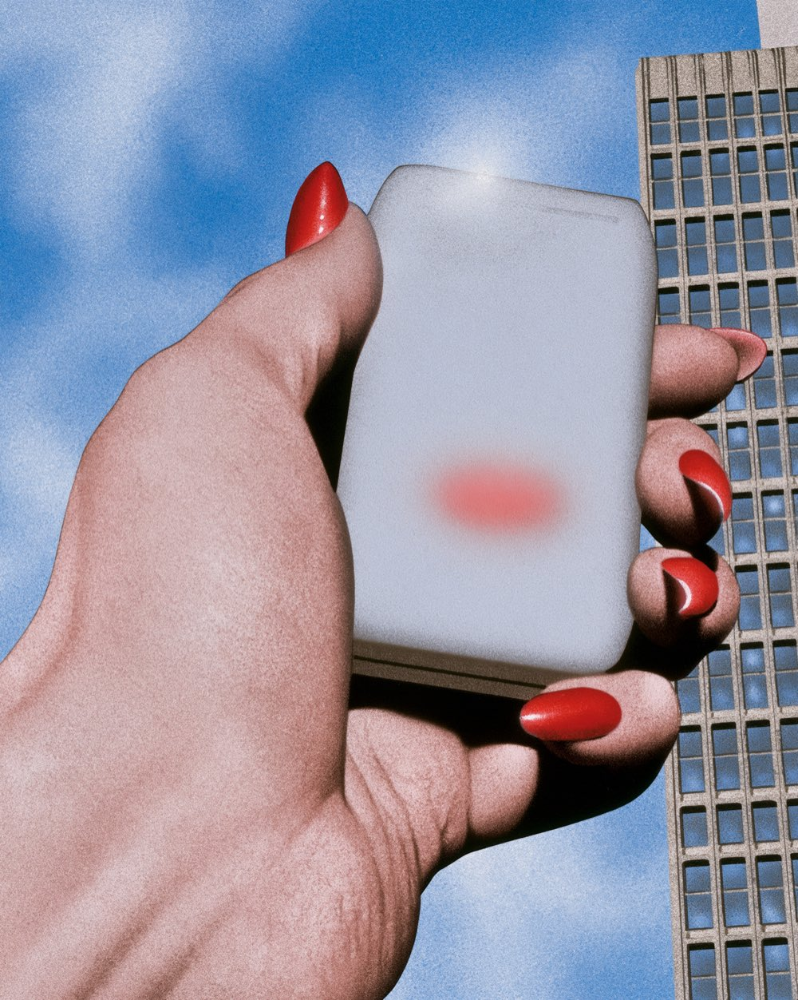

Branding, video, audio y desarrollo con un solo equipo.
Estudio creativo multidisciplinario. Hacemos identidad, fotografía, video, sitio y campañas sin repartir el proyecto entre proveedores.
Trabajo
Aquí el diseño, la cámara, el audio y el código trabajan en el mismo estudio. Un equipo, no cinco proveedores.
La identidad ya considera cómo se va a ver en video, y el sitio ya sabe qué fotografía va a recibir. Nada se traduce entre despachos.
Para ti son un interlocutor, un calendario y un presupuesto, en lugar de cinco.
Ciudad de México
Ocho áreas de trabajo.
Cómo trabajamos.
Hablemos.
Cuéntanos qué necesitas y te mandamos alcance, tiempos y precio.